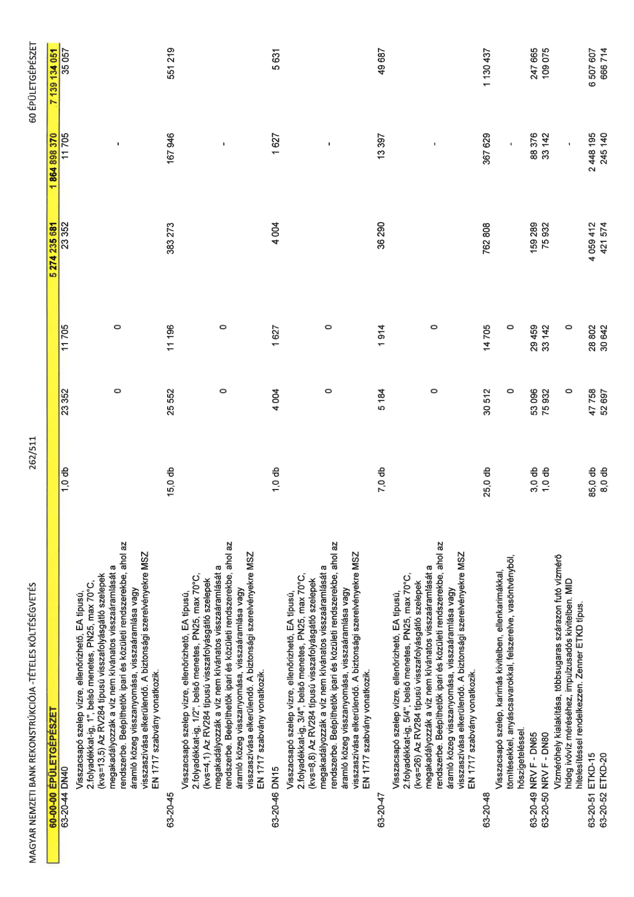

| Tétel | Menny. | Egys. | Anyag e.ár (net HUF) | Díj e.ár (net HUF) | Anyag összesen (net HUF) | Díj összesen (net HUF) | Anyag+Díj összesen (net HUF) |
|---|---|---|---|---|---|---|---|
| 60-00-00 ÉPÜLETGÉPÉSZET | NaN | NaN | 0 | 0 | 5 274 235 681 | 1 864 898 370 | 7 139 134 051 |
| 63-20-44 DN40 | 1,0 | db | 23 352 | 11 705 | 23 352 | 11 705 | 35 057 |
| Visszacsapó szelep vízre, ellenőrizhető, EA típusú, 2.folyadékkat-ig, 1”, belső menetes, PN25, max 70°C, (kvs=13,5) Az RV284 típusú visszafolyásgátló szelepek megakadályozzák a víz nem kívánatos visszaáramlását a rendszerbe. Beépíthetők ipari és közületi rendszerekbe, ahol az áramló közeg visszanyomása, visszaáramlása vagy visszaszívása elkerülendő. A biztonsági szerelvényekre MSZ EN 1717 szabvány vonatkozik. | 0 | 0 | 0 | 0 | 0 | 0 | 0 |
| 63-20-45 | 15,0 | db | 25 552 | 11 196 | 383 273 | 167 946 | 551 219 |
| Visszacsapó szelep vízre, ellenőrizhető, EA típusú, 2.folyadékkat-ig, 1/2”, belső menetes, PN25, max 70°C, (kvs=4,1) Az RV284 típusú visszafolyásgátló szelepek megakadályozzák a víz nem kívánatos visszaáramlását a rendszerbe. Beépíthetők ipari és közületi rendszerekbe, ahol az áramló közeg visszanyomása, visszaáramlása vagy visszaszívása elkerülendő. A biztonsági szerelvényekre MSZ EN 1717 szabvány vonatkozik. | 0 | 0 | 0 | 0 | 0 | 0 | 0 |
| 63-20-46 DN15 | 1,0 | db | 4 004 | 1 627 | 4 004 | 1 627 | 5 631 |
| Visszacsapó szelep vízre, ellenőrizhető, EA típusú, 2.folyadékkat-ig, 3/4”, belső menetes, PN25, max 70°C, (kvs=8,8) Az RV284 típusú visszafolyásgátló szelepek megakadályozzák a víz nem kívánatos visszaáramlását a rendszerbe. Beépíthetők ipari és közületi rendszerekbe, ahol az áramló közeg visszanyomása, visszaáramlása vagy visszaszívása elkerülendő. A biztonsági szerelvényekre MSZ EN 1717 szabvány vonatkozik. | 0 | 0 | 0 | 0 | 0 | 0 | 0 |
| 63-20-47 | 7,0 | db | 5 184 | 1 914 | 36 290 | 13 397 | 49 687 |
| Visszacsapó szelep vízre, ellenőrizhető, EA típusú, 2.folyadékkat-ig, 5/4”, belső menetes, PN25, max 70°C, (kvs=26) Az RV284 típusú visszafolyásgátló szelepek megakadályozzák a víz nem kívánatos visszaáramlását a rendszerbe. Beépíthetők ipari és közületi rendszerekbe, ahol az áramló közeg visszanyomása, visszaáramlása vagy visszaszívása elkerülendő. A biztonsági szerelvényekre MSZ EN 1717 szabvány vonatkozik. | 0 | 0 | 0 | 0 | 0 | 0 | 0 |
| 63-20-48 | 25,0 | db | 30 512 | 14 705 | 762 808 | 367 629 | 1 130 437 |
| Visszacsapó szelep, karimás kivitelben, ellenkarimákkal, tömítésekkel, anyáscsavarokkal, felszerelve, vasöntvényből, hőszigeteléssel. | 0 | 0 | 0 | 0 | 0 | 0 | 0 |
| 63-20-49 NRV F - DN65 | 3,0 | db | 53 096 | 29 459 | 159 289 | 88 376 | 247 665 |
| 63-20-50 NRV F - DN80 | 1,0 | db | 75 932 | 33 142 | 75 932 | 33 142 | 109 075 |
| Vízmérőhely kialakítása, többsugaras szárazon futó vízmérő hideg ivóvíz méréséhez, impulzusadós kivitelben. MID hitelesítéssel rendelkezzen. Zenner ETKD típus. | 0 | 0 | 0 | 0 | 0 | 0 | 0 |
| 63-20-51 ETKD-15 | 85,0 | db | 47 758 | 28 802 | 4 059 412 | 2 448 195 | 6 507 607 |
| 63-20-52 ETKD-20 | 8,0 | db | 52 697 | 30 642 | 421 574 | 245 140 | 666 714 |
